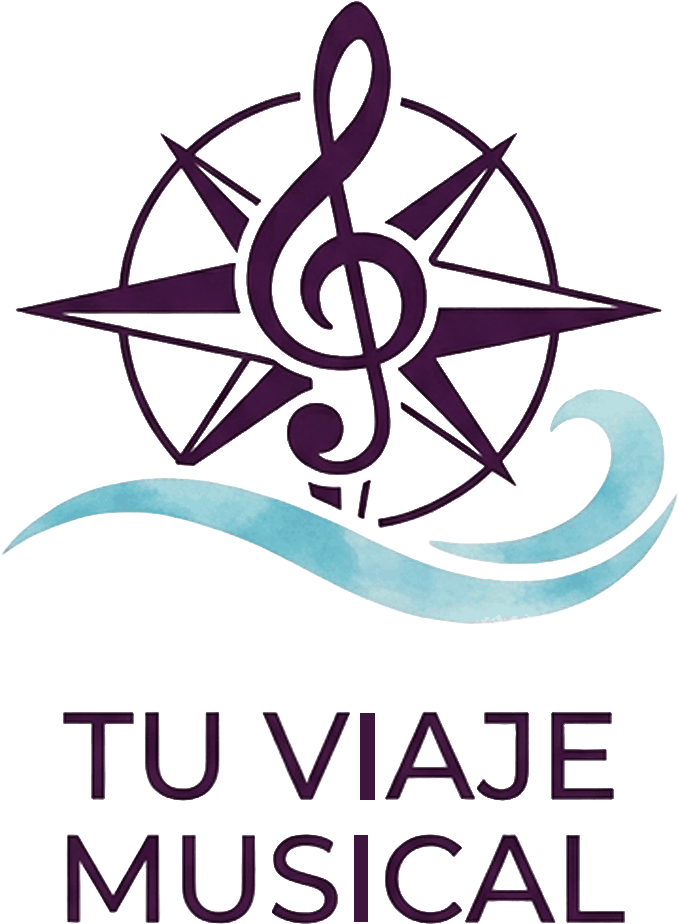

Materiales pensados para acompañar el aprendizaje musical, curso a curso — para alumnos de cualquier instrumento y para quienes les enseñan.
Disponible ahora

Agenda Instrumental
La agenda del curso para alumnos de música de cualquier instrumento: calendario, repertorio, eventos y seguimiento semanal.
Edición Andalucía (3º y 4º de EEBB)
Edición Andalucía (todos los cursos)
Edición nacional
Ver las tres versiones
Desde 20 €
Próximamente
Estamos preparando nuevos materiales para seguir acompañando tu viaje musical. Muy pronto habrá más por descubrir.
Repertorio
Lectura a vista
Improvisación
Sobre mí
Soy profesora de música y creé Tu Viaje Musical porque quería que mis alumnos tuvieran herramientas bonitas y útiles para organizar su aprendizaje, curso tras curso. Cada material nace de necesidades reales de clase, pensado para acompañar — sin sustituir — el trabajo con tu profesor o profesora.